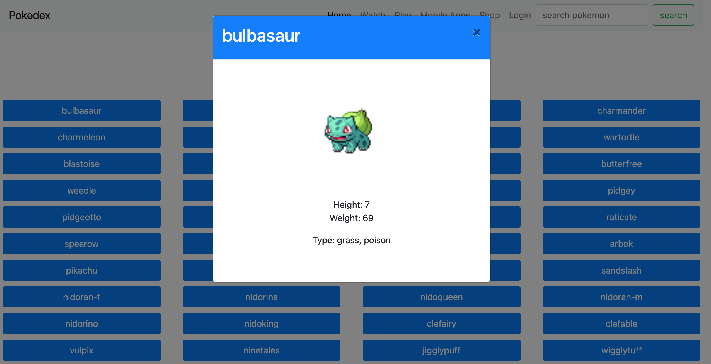
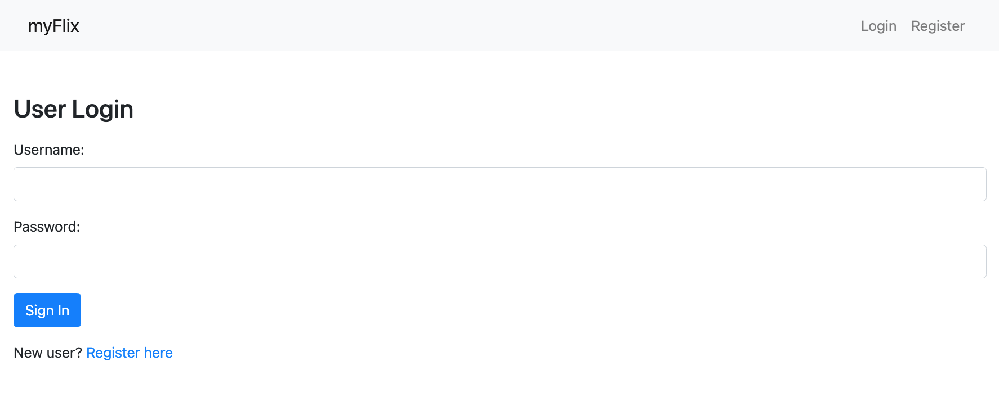
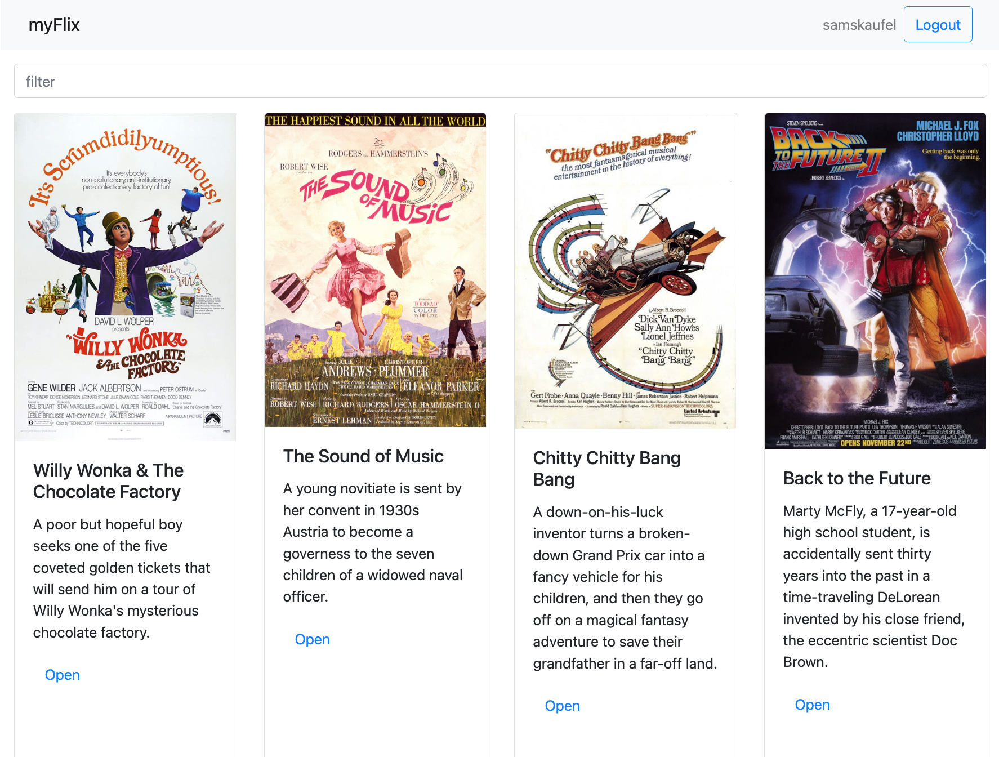
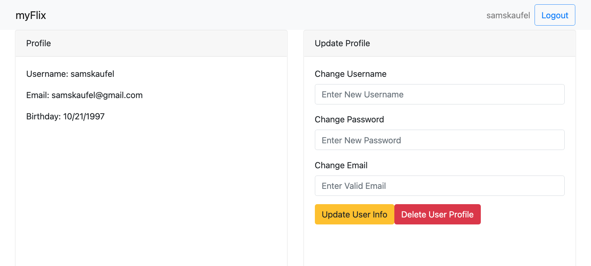
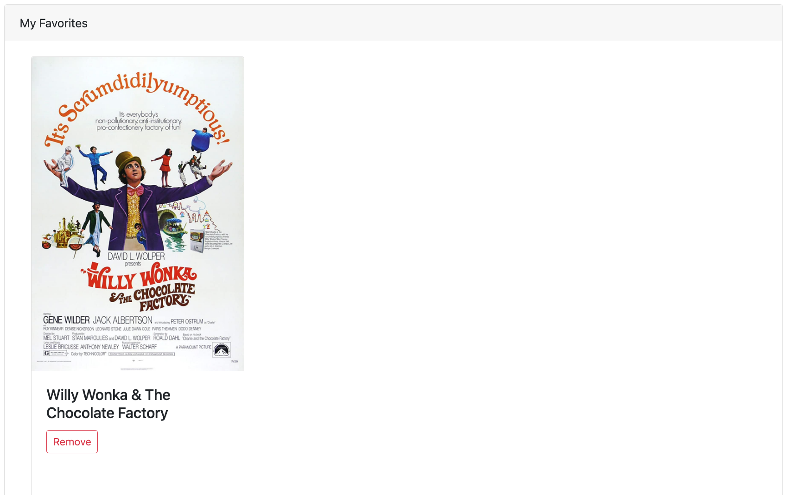
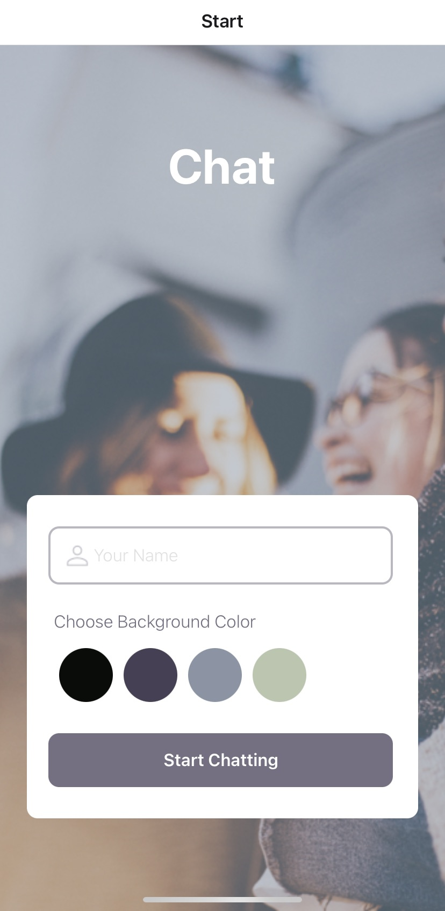
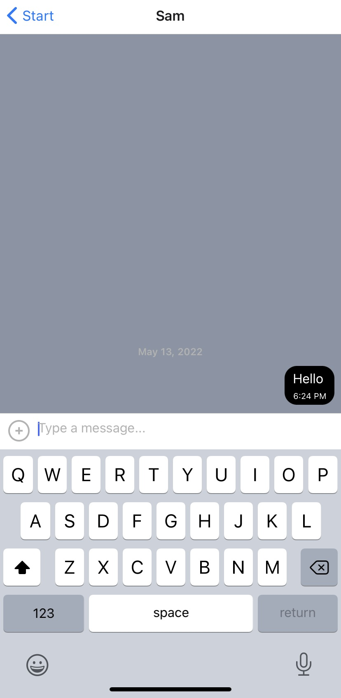

Pokedex
Overview
Objective
The purpose of creating this web app was to get experience using JS, interacting with DOM, loading data from an API, using a JS library (jQuery), using a UI framework (Bootstrap), and using ESLint rules.
Description
This small web application interfaces with an external Pokemon API using AJAX. This app displays a list of 150 Pokemon, and upon user action (i.e., clicking on a Pokemon), user can view details for that Pokemon.
Built With
HTML, JavaScript, jQuery, Bootstrap, and interfaces with an external Pokemon API using AJAX.
See project on GitHub Live VersionmyFlix API
Overview
Objective
The purpose of this project was to gain experience creating my own REST API that interfaces with a database. I got experience using the tech stack MERN, writing business logic using Mongoose, testing using Postman, using basic HTTP and JWT authentication, and hosting using Heroku.
Description
The server-side component of the web application, "myFlix". The web application will provide users with the access to information about different movies, directors, and genres. Users will be able to sign up, update their personal information, and create a list of their favorite movies.
Built With
HTML, CSS, JS, MongoDB, Express, React, Node.js, deployed to Heroku, documentation generated with JSDoc.
See project on GitHubmyFlix: React
   Overview
Objective
The purpose of this project was to practice full-stack web development by creating a SPA for the server-side code.
Description
Using React, I built the client-side for an application called myFlix based on its existing server-side code (REST API and database). This app allows users to create a profile and displays details about movies, genres, and directors. Users can add movies to a favorites list and change their user information.
Built With
HTML, JS, MongoDB, Express, React, Node.js, Parcel, React-Redux, Styled With Bootstrap.
See project on GitHubmyFlix: Angular
Overview
Objective
The purpose of this project was to practice full-stack web development using Angular to build the same client-side interface I previously built with React.
Description
Using Angular, I built the client-side for the same application, myFlix, based on its existing server-side code (REST API and database). This app allows users to create a profile and displays details about movies, genres, and directors. Users can add movies to a favorites list and view their profile.
Built With
HTML, SCSS, TS, JS, Angular, Node.js, Documentation generated with TypeDoc.
See project on GitHubChat
 Overview
Objective
The purpose of this project was to gain practice with React Native mobile development.
Description
Chat is an app for mobile devices. Built using React Native and optimized for both iOS and Android devices. Expo was used to develop the app and Google Firestore is used to store the chat messages. The app will provide users with a chat interface and options to share images and their location.
Built With
React Native, Expo / Expo Go, Google Firestore Database, Gifted Chat, Android Studio.
See project on GitHub